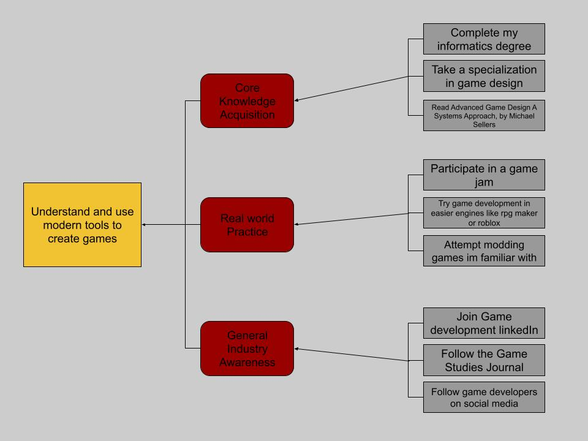

These are a couple of techniques that can be used in game design/development and the ways they interact with humans in the field.
Machine Learning can be used in the process of rigging and modeling characters in the context of game design. These tools function by placing trained agents within character models and having them interact with environmental hazards to create unique actions, which are then used in the game when those hazards or interaction occur that otherwise would take immense effort to animate. These tools are at an intersection where it is both assisting game designers but, in that process, replacing parts of a team. Only a designer who can model and rig the character designs is needed with this tool, and widespread use could mean large parts of animation teams get removed. This technology was shown to the world around 5-6 years ago, and since then has been adopted by studios like Netflix and mimic productions. This will be an invaluable tool for any animator in any sector not just game design. But this technology can be used to create more expressive and interactive characters than we’ve ever seen in games, but it comes at the risk of removing large parts of creative teams if used improperly.
Procedural content generation is the process of creating a set of rules to guide automatic generation of objects like terrain, maps, and levels. Procedural generation is the main driving force behind many games, Minecraft and rouge-like games use procedural generation to build the gameplay loop by creating infinite worlds and levels. Procedural generation is mainly based on algorithms are often used in games as a tool to speed up tedious tasks while keeping a detailed visual. This technology has existed within game development for decades, the first widely know use being in Rouge(1980) and has been adopted by the wider industry since. The adoption of procedural generation by the wider games industry means it a necessary tool to learn for almost any person hoping to get into the industry, and its just another tool that game developers can use in both computer science and art direction.
